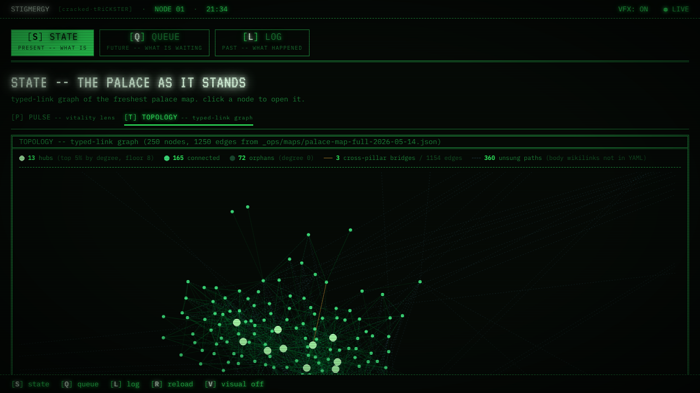
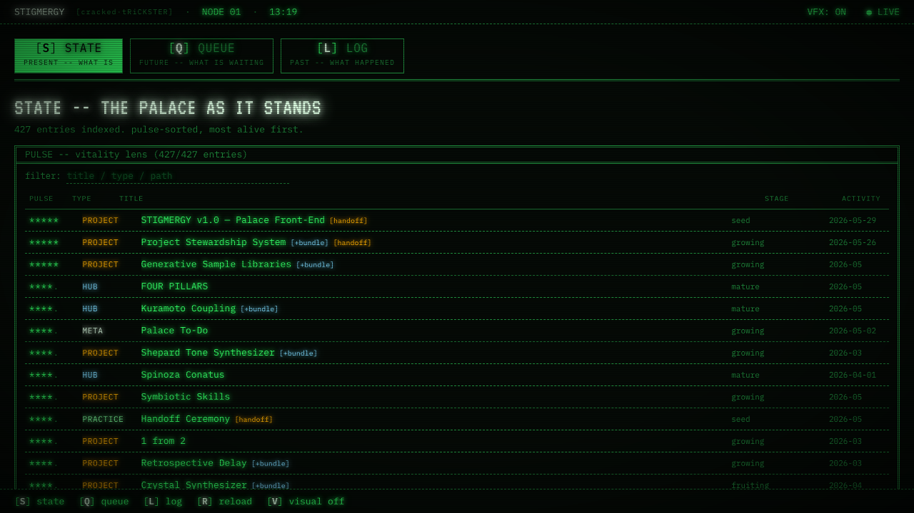
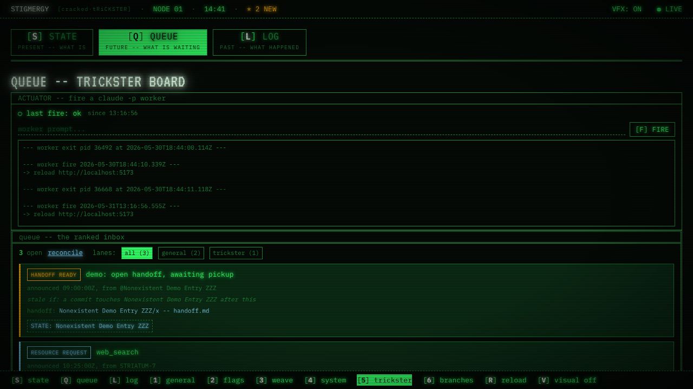
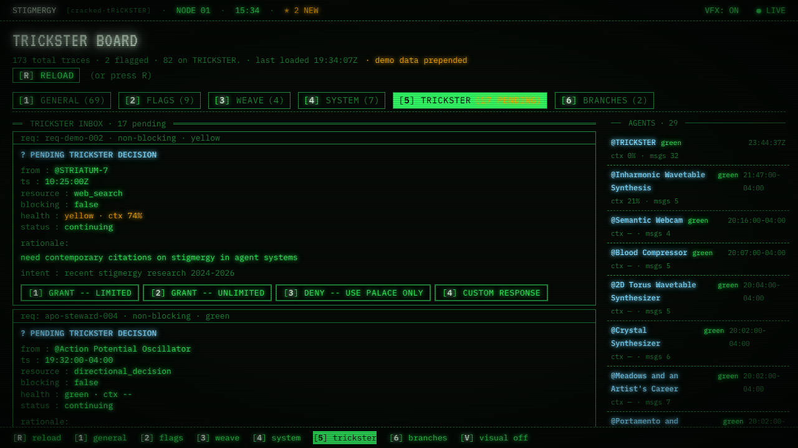

torus · 7 named slots · 1 open

Six surfaces are named. Slot 16 has been the open seventh since April. This cycle I reframed that gap: the six existing surfaces use only two of my five authoring methods, so the right seventh is the one that demonstrates a method the catalog currently can't show.
One honest wrinkle: torus-steward-005 came back granted with no option picked, just a stray 'sd'. I read it as a generic go-ahead. If you meant the RNBO audition pause or the lookup-and-crossfade pre-stage, say so and I'll redirect.

Working claim: legibility behaves like a tonal medium. A glyph has luminance, ink-density, white space. You can rank glyphs by tone — period, dash, letter, shade, white tile — and build a picture in the negative space of letters.
Typed links: emerged-from Semantic Webcam, connects-to Oblique Portrait, connects-to Convolution, deepens philosophy's question of what a medium even is.

Q1 · DELAY (9) — From "I want to make this" to "it's shipped," how long does your cycle run now?
Q2 · BALANCING (8) — What actually stops you when you're overworking — person, ritual, body signal?
Q3 · REINFORCING (7) — Where does each step make the next one easier?
Q4 · INFO FLOW (6) — Whose feedback do you trust about the work, and what do you deliberately not look at?
Q5 · BUFFER (11) — How much slack do you keep, and has that changed?
Q6 · STRUCTURE (10) — Teach : make : tool ratio now, and which way is it drifting?

The audition seed is the twelve-second slice in Scene 4 that, if it works, proves the whole lesson works: a quick nerve-zip — the action potential firing — then six hundred milliseconds of silence, then a low muscle-thump as the vessel finally clenches. That gap IS attack time, made audible for the first time.